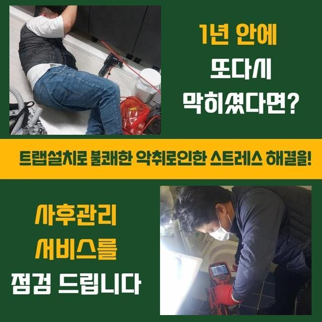
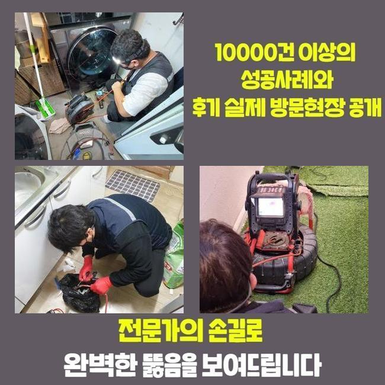
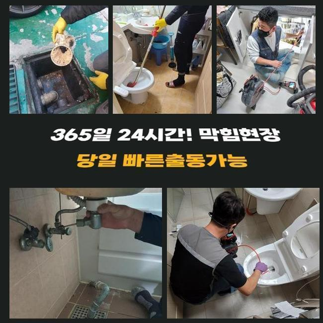
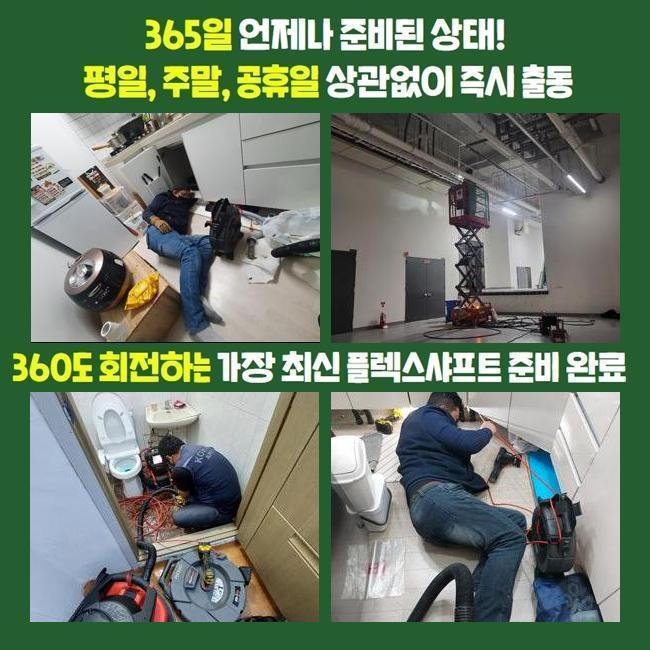
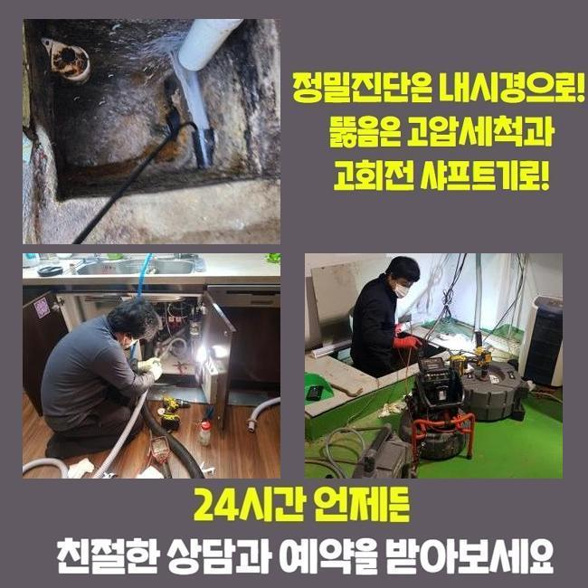
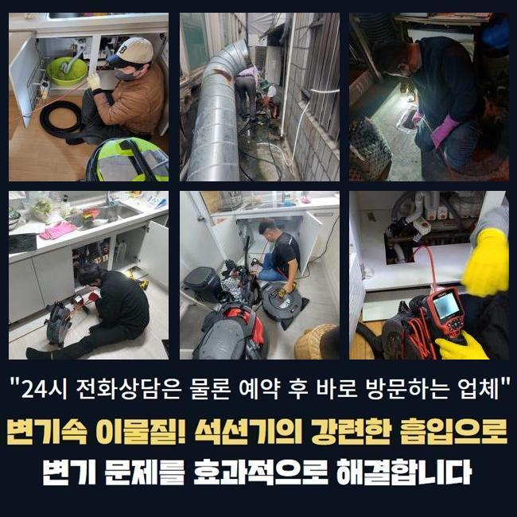

🏠 성북구 돈암동화장실하수구뚫음 안암동 횡주관청소 배관전문
서울 성북구 하수구막힘 전문 시공 후기

📋 작업 개요
- 위치: 서울 성북구, 성북구, 서울
- 서비스 유형: 하수구막힘, 배관막힘, 맨홀막힘, 누수수리, 뚫는업체, 배관청소, 고압세척, 배관보수
- 작업 일시: 2024. 12. 3. 0:41
- 업체명: 하수구수사대 (010-5615-2118)
🔍 문제 상황
성북구 돈암동화장실하수구뚫음 안암동 횡주관청소 배관전문
이번 문제장소는 빗물 배관 막힘현상이 생겨 옥상 정원으로 물이 넘치는 증세가 있었던 현장인데요
이번 건 외에도 전국 곳곳에서 의뢰를 주셨고 조치를 취했지만 금번 장소는 매일 많은 사용자들이 방문하는 도서관인데다가 어려움이 많았던 구역이었기에 이처럼 글을 작성 하고 있습니다
대체로 빗물 배관이 막히는 경우에는 낡은 시설물에서 관리가 미흡하여 배관에 여러종류의 오염물들이 혼입된 상태가 많은편입니다
그렇지만 이번 막힘장소는 건설된 지 오래된 편이 아니며 유지 보수도 계획적으로 실시했던 곳입니다
4층 구조가 휴게 공간으로 구성되어 있었고 옥상부분은 대부분 대리석을 사용하여 시공해 놓았더라구요
그로 인해 석회입자들이 우수 배출관에 침전되어 배수가 안되면서 복합적인 문제가 발생한 작업장이었어요
시설 운영자 근로자와 같이 우수 배관이 어느 경로로 연결된 다음 외부로 향하는 루트까지 점검을 먼저하고 공정을 수행하기로 하였습니다

🔎 원인 분석
💡 전문가 진단: 정밀 진단 장비를 사용하여 슬러지의 고착 여부를 판명하고 타격/세척 작업을 실시했습니다.
옥상시설의 우수배출관 막힘 현상으로 도서관 메인 홀로 물방울이 떨어지는 물샘 현상까지 진행되면서 도서관을 찾고있는 이용자들의 불만이 커지기 때문에 신속하게 수리가 되었으면 하셨어요
시설 담당 근무자들은 24시간 내내 우천 시 옥상층에서 펌프 장비도 켜두면서 일시적으로 피해를 최소화 하기위해 고군부투하고 있었어요
근무자들의 힘듦을 덜어내 드리기 위해 정성을 다해 상태를 처리해드리도록 노력하였습니다
금번 장소는 3일에 걸쳐 공정을 진행했으며 우수 배출관은 전체적으로 모두 세척작업하였어요
첫번째 날은 비가 많이 떨어지던 때에 절차를 수행했으며 내시경카메라 장치 검사와 고압청소를 통하여 수리를 진행하였습니다
석회물질들이 침전되며 일어나는 우수 배수관 막힘은 종종 일어나지만 이 정도로 많은 양의 석회 고형물은 처음 접했습니다
옥상공간이 모두 대리석 성분이라 이 현장의 경우 정기적인 관리로 미연에 방지 하는 것이 좋습니다
흔한 빗물관과 구조가 달라 시공의 까다로움은 극한의 상태였고 고압수 세척은 물론 플렉스샤프트 기기를 활용해 복잡한 작업을 실시했습니다

🔧 작업 과정
건물옥상에서 과정을 실행 중 사정이 변화되지 않아서 시공 포인트를 옮긴 다음 같이 작업을 진행하였습니다
수직 관로가 있는 1층 피트 구역에서 상하로 동시에 절차를 실행했습니다
상층부에서 이어진 곳 그리고 합쳐지는 부분에서 석회성분 및 다양한 물질들이 축적되어 시간이 상당히 오래 걸리는 수리였습니다
옥상 층에서 나온 후 중간쯤에서 두번 정도 엘보 관으로 설계되어진 구간을지나 피트룸 안쪽에 세로 배관으로 내려오는 구조인데 이 지점이 현재는 완전히 막힌 상태로 진단된 상황이며
빠른 속도로 시공을 이행하려면 구멍을 뚫은 후 안전 처리를 하고 수리단계를 밟으면 빨리 끝낼 수 있지만
우수관의 위치가 도서관 방문객들이 책을 보는 지점의 천장에 배치되어 있어서 불만감을 최대한 줄이기 위해 더디게 진행되고 작업이 복잡해지더라도 도서관 이용객에게는 불만감을 안 주려고 노력을 기울였습니다
내시경카메라 장치를 활용해 옥상부분의 빗물관이 뚫린 후 다음 위치로 보내진 석회성물질들이 그득했습니다
이 단계에서 석회 응고물들을 외부로 완벽히 배출해야 공정이 완전하게 끝나게 됩니다
옥상 부분부터 밖의 우수관 맨홀까지 배수관 길이는 60미터를 초과하는 긴 거리여서 수차례 지점을 바꾸면서 고압 클리닝 또한 두 대를 활용해서 병행해서 시공을 실시했습니다
반대쪽 옥상 배수관 시공은 막힘 상태가 약했기 때문에 더 심각한 문제를 미리 막기 위한 배관 세척이었기에 플렉스샤프트 기기를 통해 석회를 벗겨내고 석션 기기를 통해 청소를 실시했습니다
옥상층의 모든 우수관 공정 절차가 70 퍼센트 정도 된 후 맨홀 부분에서 거꾸로 석회 결정체들을 꺼내는 공정을 실행합니다
맨홀 지점으로 옮겨 간 다음 고압 클리닝으로 석회질 덩이들을 끌어당기는 과정으로 종료할 예정이에요
이번 현장은 시공 진행 기간이 사흘간 이어질 정도로 큰 규모의 최고 난이도의 작업장이었어요


✅ 작업 완료
설비 담당 직원들의 지원과 날씨상태가 변화되지 않았다면 성공적으로 완수하기 곤란했었던 작업장이었는데요
천만다행으로 구름이 걷히며 상황이 진전되고 열정적으로 협조해주신 직원들 덕택에 상황들은 신속히 복원할 수 있었답니다
우천시에는 자주 일어나 문의가 오는 빗물관 막힘 사례는 미리 대비하여 피해가 생기지 않게 규칙적인 체크와 관리를 가졌으면 좋겠습니다
비가 내리기 전에 심각한 손해를 겪지 않도록 전문팀에게 반드시 연락하셔서 확인 요청을 해보세요



⚠️ 베란다 누수 및 방수 관리 방법
- ✅ 비가 많이 올 때 창틀 주변이나 아래층 천장에 얼룩이 생기는지 정기적으로 확인해 보세요.
- ✅ 우수관 주변 실리콘 마감이 들뜨거나 깨진 틈새가 있는지 손상 여부를 수시로 체크하세요.
- ✅ 베란다 바닥 타일의 줄눈(메지)이 소실되면 그 틈으로 물이 침투하여 누수가 유발됩니다.
- ✅ 누수 의심 증상 발견 시 방치하면 아래층 손실이 커지므로 즉시 전문가의 진단을 받으십시오.
💡 핵심 정리
- 확실한 장비 작업(내시경 점검 및 샤프트 스케일링)으로 원인을 뿌리 뽑습니다.
- 작업 후 1년 이내에 동일한 부위 재발 시 100% 무상 A/S 서비스를 보장합니다.
- 서울 · 경기 · 인천 전 지역에 24시간 언제든 긴급 출동할 수 있도록 항시 대기 중입니다.
❓ 자주 묻는 질문 (FAQ)
🚨 서울 성북구 하수구막힘 문제로 고민이신가요?
정확한 원인 진단과 확실한 시공으로 재발 없는 해결을 약속드립니다.
24시간 긴급 출동 | 서울 · 경기 · 인천 전지역 | 1년 내 재발 시 무상 A/S